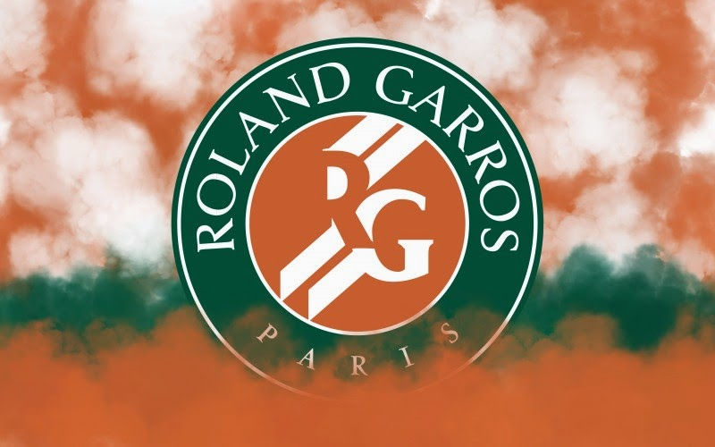

HSBC, від Hongkong & Shanghai Banking Corporation Holdings plc — британський банк, найбільший банк Європи, одна з найбільших фінансових груп у світі. Утворений в 1991 році Hongkong and Shanghai Banking Corporation, що мав штаб-квартири на Далекому Сході, пізніше став засновником є дочірньою структурою Група HSBC. Після утворення банківської групи штаб квартира переїхала у Лондон. Процес утворення почався після придбання англійського банка Midland. Назва взята з початкових літер банка засновника. Також варто відмітити що домашнім ринком, група рахує як Великобританію так і Гонконг. HSBC налічує близько 7200 офісів у 82 країнах світу. Компанія надає повний комплекс банківських послуг: міжнародний банкінг та фінансові послуги, включаючи роздрібний та корпоративний банкінг, торгівлю цінними паперами, робота на ринках капіталу, інвестиційний банкінг та страхування. HSBC, від Hongkong & Shanghai Banking Corporation Holdings plc — британський банк, найбільший банк Європи, одна з найбільших фінансових груп у світі. Утворений в 1991 році Hongkong and Shanghai Banking Corporation, що мав штаб-квартири на Далекому Сході, пізніше став засновником є дочірньою структурою Група HSBC. Після утворення банківської групи штаб квартира переїхала у Лондон. Процес утворення почався після придбання англійського банка Midland. Назва взята з початкових літер банка засновника. Також варто відмітити що домашнім ринком, група рахує як Великобританію так і Гонконг. HSBC налічує близько 7200 офісів у 82 країнах світу. Компанія надає повний комплекс банківських послуг: міжнародний банкінг та фінансові послуги, включаючи роздрібний та корпоративний банкінг, торгівлю цінними паперами, робота на ринках капіталу, інвестиційний банкінг та страхування. HSBC, від Hongkong & Shanghai Banking Corporation Holdings plc — британський банк, найбільший банк Європи, одна з найбільших фінансових груп у світі. Утворений в 1991 році Hongkong and Shanghai Banking Corporation, що мав штаб-квартири на Далекому Сході, пізніше став засновником є дочірньою структурою Група HSBC. Після утворення банківської групи штаб квартира переїхала у Лондон. Процес утворення почався після придбання англійського банка Midland. Назва взята з початкових літер банка засновника. Також варто відмітити що домашнім ринком, група рахує як Великобританію так і Гонконг. HSBC налічує близько 7200 офісів у 82 країнах світу. Компанія надає повний комплекс банківських послуг: міжнародний банкінг та фінансові послуги, включаючи роздрібний та корпоративний банкінг, торгівлю цінними паперами, робота на ринках капіталу, інвестиційний банкінг та страхування. HSBC, від Hongkong & Shanghai Banking Corporation Holdings plc — британський банк, найбільший банк Європи, одна з найбільших фінансових груп у світі. Утворений в 1991 році Hongkong and Shanghai Banking Corporation, що мав штаб-квартири на Далекому Сході, пізніше став засновником є дочірньою структурою Група HSBC. Після утворення банківської групи штаб квартира переїхала у Лондон. Процес утворення почався після придбання англійського банка Midland. Назва взята з початкових літер банка засновника. Також варто відмітити що домашнім ринком, група рахує як Великобританію так і Гонконг. HSBC налічує близько 7200 офісів у 82 країнах світу. Компанія надає повний комплекс банківських послуг: міжнародний банкінг та фінансові послуги, включаючи роздрібний та корпоративний банкінг, торгівлю цінними паперами, робота на ринках капіталу, інвестиційний банкінг та страхування. HSBC, від Hongkong & Shanghai Banking Corporation Holdings plc — британський банк, найбільший банк Європи, одна з найбільших фінансових груп у світі. Утворений в 1991 році Hongkong and Shanghai Banking Corporation, що мав штаб-квартири на Далекому Сході, пізніше став засновником є дочірньою структурою Група HSBC. Після утворення банківської групи штаб квартира переїхала у Лондон. Процес утворення почався після придбання англійського банка Midland. Назва взята з початкових літер банка засновника. Також варто відмітити що домашнім ринком, група рахує як Великобританію так і Гонконг. HSBC налічує близько 7200 офісів у 82 країнах світу. Компанія надає повний комплекс банківських послуг: міжнародний банкінг та фінансові послуги, включаючи роздрібний та корпоративний банкінг, торгівлю цінними паперами, робота на ринках капіталу, інвестиційний банкінг та страхування.
|  | ||

|